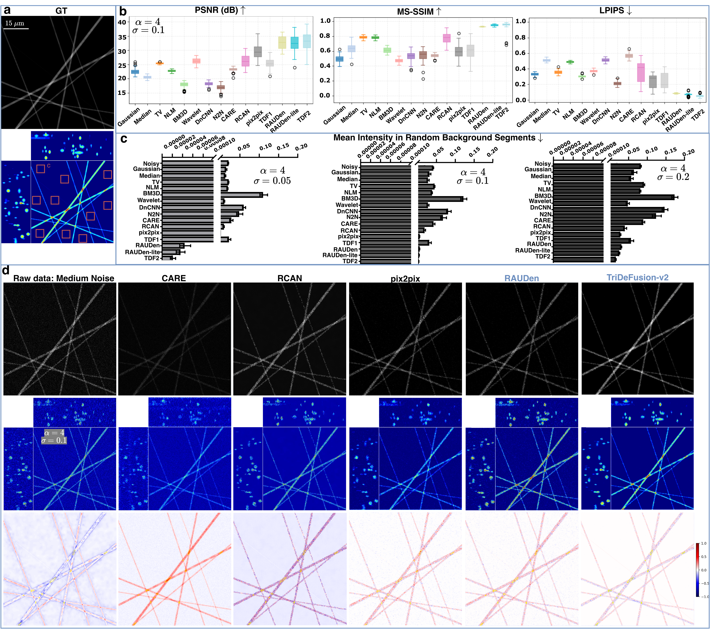
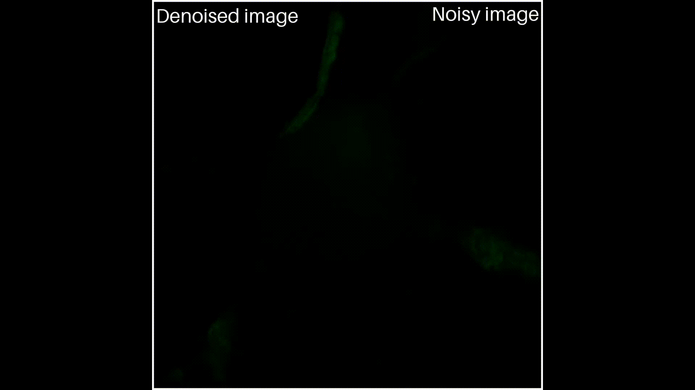

Abstract
Fluorescence microscopy reveals fine biological structures but can produce noisy images, especially under low-light imaging conditions. TriDeFusion-v2 (TDF2) combines a compact learned denoiser with wavelet-domain filtering to restore 3D fluorescence microscopy data. The paper evaluates the method on synthetic and real microscopy data, considering both restoration quality and inference efficiency.
Method
TDF2 uses a compact RAUDen-Lite student denoiser followed by a wavelet filtering stage. The wavelet operator is CUDA-optimized for accelerated execution. During training, a RAUDen teacher provides denoised targets; the student is trained with restoration and distillation losses. This design aims to retain useful image detail while reducing the cost of the denoising model.
From TriDeFusion-v1 to v2
TriDeFusion-v2 is a follow-up to TriDeFusion-v1. The original TriDeFusion paper introduced an enhanced denoising algorithm for 3D fluorescence microscopy that integrates modified Noise2Noise and non-local means. TDF2 advances this line of work with a distilled hybrid residual-attention denoiser and wavelet filtering. The v1 paper appeared in the 2024 IEEE SIBIRCON conference; see its IEEE record.
Results
The examples below show complementary evaluations: a synthetic tube-structure comparison and a real fluorescence microscopy sequence. The real-data animation presents noisy and denoised views over time, allowing inspection of how fine dendritic structures and background texture appear through the sequence.


Citation
@article{zolin2026tridefusionv2,
title={TriDeFusion-v2: Distilled Hybrid Residual Attention Denoising and Wavelet Filtering},
author={Zolin, Ivan and Rakovskaya, Anastasiya and Fedorov, Evgenii and Belyaev, Sergey and Chukanov, Vyacheslav and Pchitskaya, Ekaterina},
journal={IEEE Access},
year={2026},
doi={10.1109/ACCESS.2026.3750817}
}TriDeFusion-v1
@INPROCEEDINGS{10758532,
author={Zolin, Ivan and Chukanov, Vyacheslav and Pchitskaya, Ekaterina},
booktitle={2024 IEEE International Multi-Conference on Engineering, Computer and Information Sciences (SIBIRCON)},
title={TriDeFusion: Enhanced denoising algorithm for 3D fluorescence microscopy images integrating modified Noise2Noise and Non-local means},
year={2024},
pages={211--216},
doi={10.1109/SIBIRCON63777.2024.10758532}
}